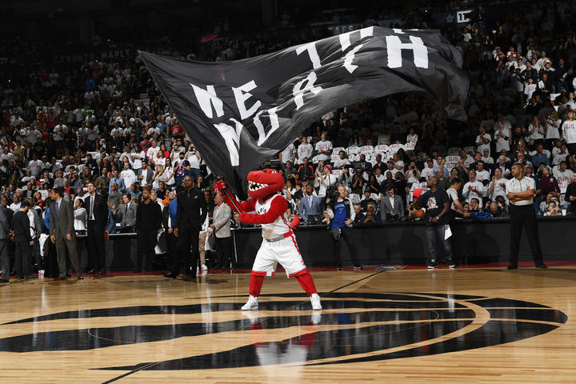

The Toronto Raptors is a professional basketball team based in Toronto, Ontario. Their arena is the Air Canada Centre, after switching from three other arenas. The Raptors compete against 29 other teams (30 teams total) in the NBA. They are a part of the league's Eastern Conference Atlantic Division. The Raptors are currently the only Canadian team in the league, the rest being American. The face of the Toronto Raptors is considered to be DeMar DeRozan, a shooting guard of the team. Other important people of the team are the general manager,Bobby Webster, and the head coach, Dwane Casey. Sadly, many of the people of the Raptors are not well known. Teams like the Golden State Warriors and Cleveland Cavaliers are much more famous. One reason is because the Raptors are not a championship team. If the Raptors did go to the finals more often, people would have known them better. A lot of people do watch the NBA Finals, so if the Raptors did advance to the finals and even win, people would be aware of the team.
FOR MORE ON THE LATEST NEWS AND INFO OF THE TORONTO.....CLICK THIS LINK!